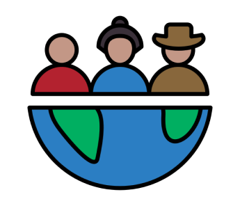

Flawors


¿Que Somos?
En el corazón de nuestra cocina exótica se encuentra la pasión compartida por la diversidad gastronómica de todos los rincones del planeta. Somos un equipo de cuatro apasionados hombres de mediana edad, unidos por el deseo de llevar a su mesa una experiencia gastronómica inolvidable.
En nuestro restaurante, no solo servimos comidas; ofrecemos un viaje sensorial que cambia cada semana. Exploramos los sabores auténticos de diferentes partes del mundo, llevándolos a través de una travesía culinaria única. Nuestro compromiso con la autenticidad y la calidad impulsa cada creación en nuestra cocina.
Cada plato es una obra maestra cuidadosamente elaborada, una expresión de la riqueza cultural y la tradición culinaria que inspira nuestra cocina. Creemos en la inigualable experiencia de probar algo nuevo, de sumergirse en lo desconocido a través de los sabores y aromas que transportan directamente a la región que exploramos esa semana.
Papas a la Huincaína
Un clásico de la cocina peruana típico de la ciudad de Huancayo, en Junín. Consiste en un plato de patatas amarillas cubiertas por una salsa de ají amarillo con leche, aceite, galletas de soda y queso fresco. Se acompaña con arroz y contiene en su parte superior huevo cocido.